🍜 Mokbang: Website-Based Online Food Ordering Using Scrum
Project Year: 2023
Mokbang is a website-based online food ordering system designed for restaurants and warung (small eateries). Customers can order food and drinks, buy groceries, and reserve tables online, while restaurants manage orders and sales reports efficiently. The system was designed using the Scrum methodology so the team could adapt quickly to changing requirements throughout development.
Key Technologies & Methods
Achievements
- Defined 13 product backlog items prioritized as High, Medium, and Low.
- Planned 4 sprints (login, dashboard, payment page, order page) totaling 44 estimated hours.
- Mapped user stories for 2 actors: Admin and User.
- Designed 19 mobile screens covering ordering, grocery shopping, and table reservation.
- Presented in the SITASI 2023 national seminar proceedings (ISSN 2828-786X).
System Design
The research followed a structured flow: data collection (interviews, observation, literature study), system analysis (actors, business processes, system structure), system design (use case, activity, and class diagrams), sprints (daily scrum and implementation), and application testing.
Work was tracked on a Trello board with columns for project resources, backlog, to do, doing, and done. Each sprint had its own task breakdown (UI/UX design, coding, testing) with hour estimates, and every sprint ended with a review to check whether the features worked as expected.
Admin can manage food data, process orders, and view sales reports. Users can register, log in, browse products, add items to the cart, choose a payment method, and cancel a transaction.
Screenshots
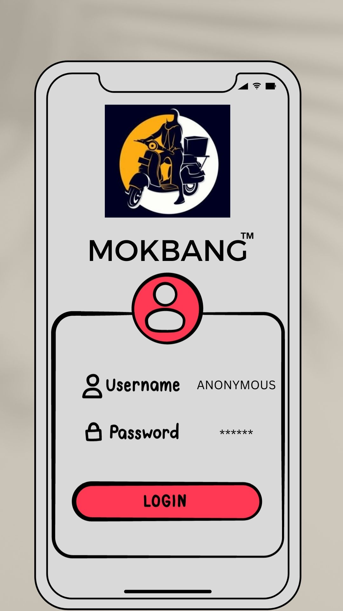
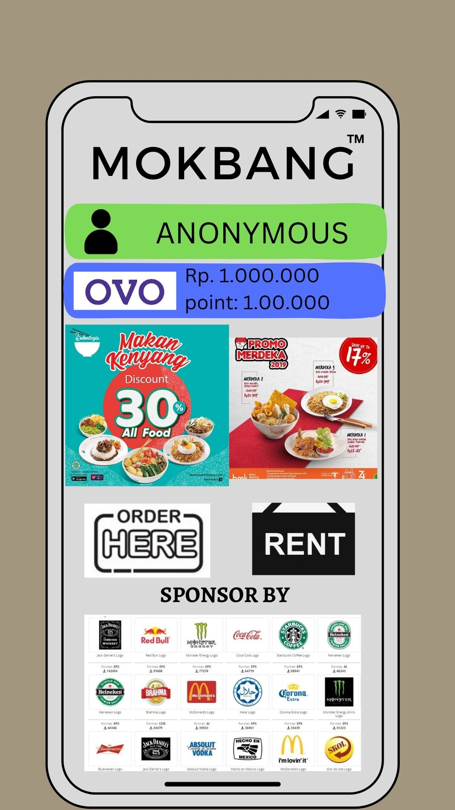
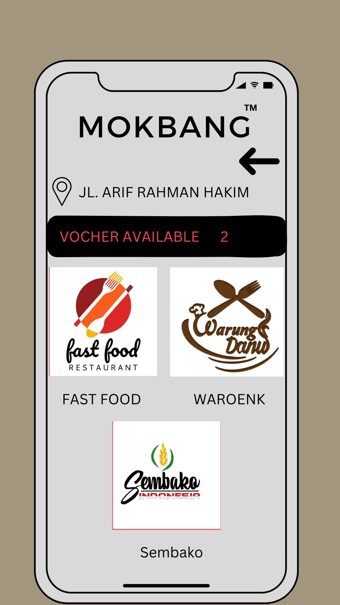
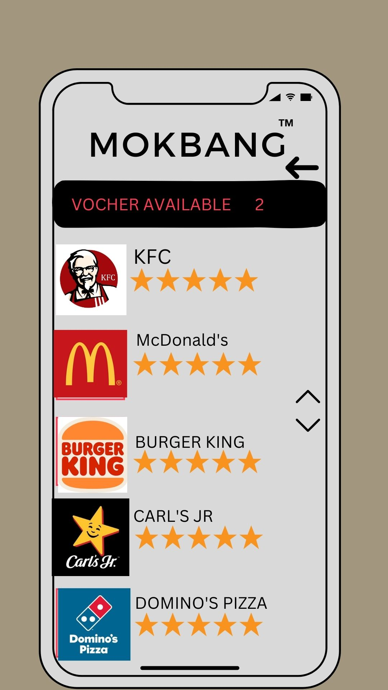
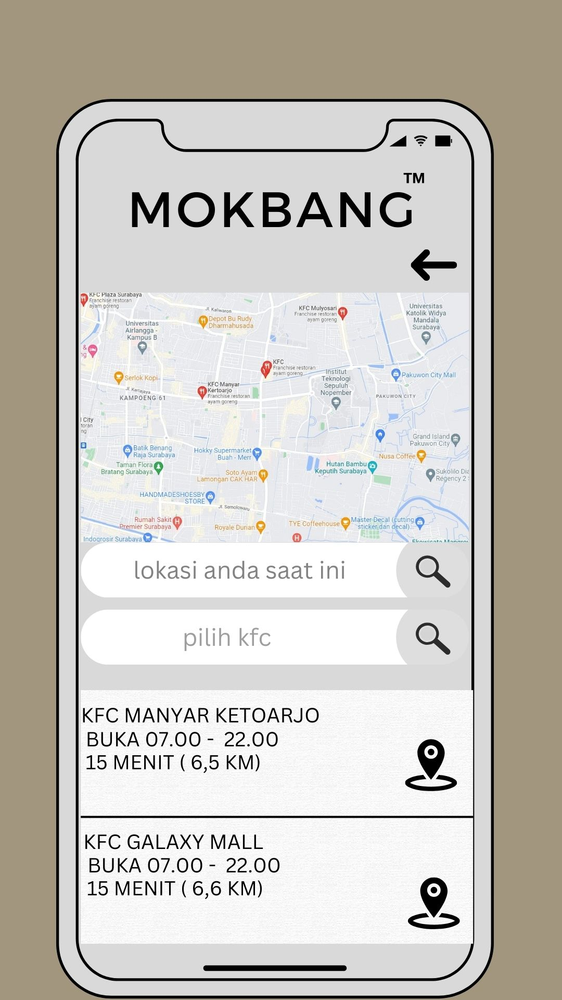
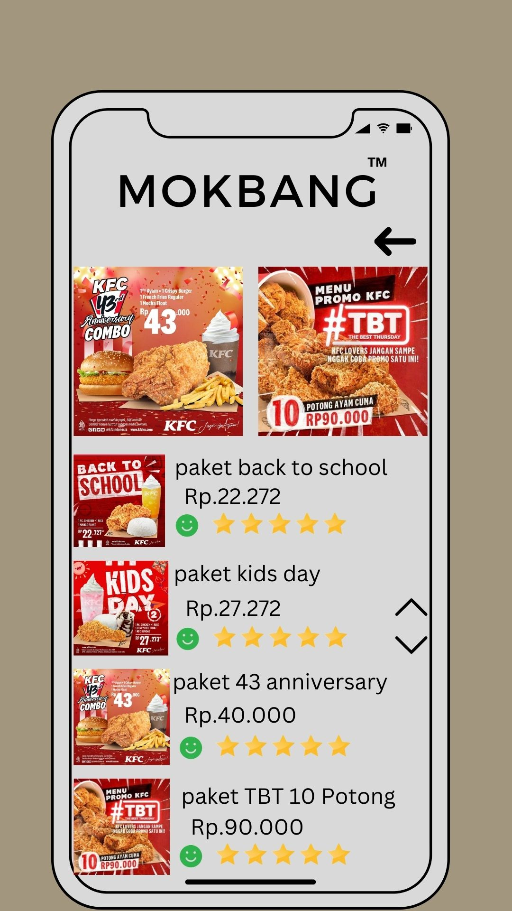
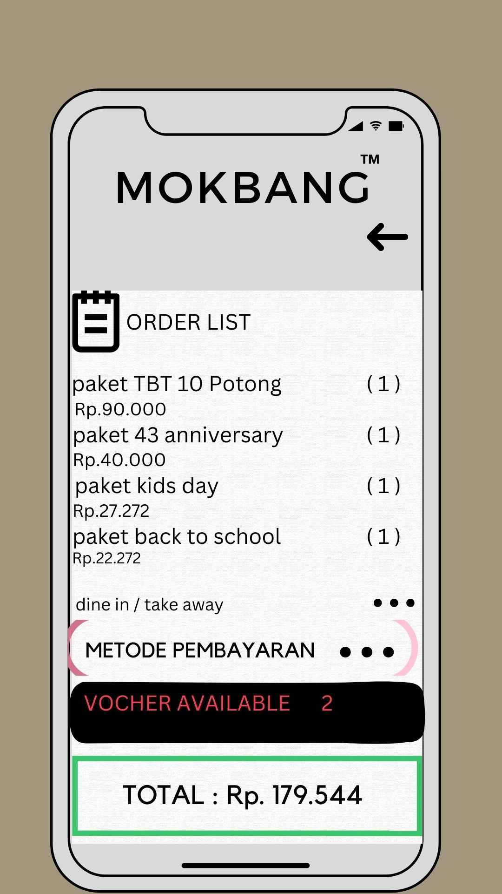
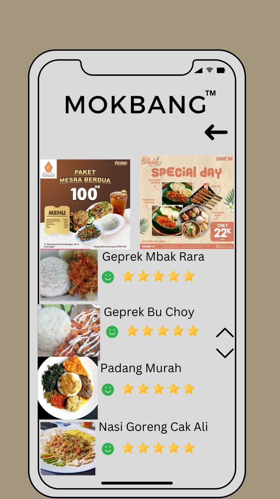
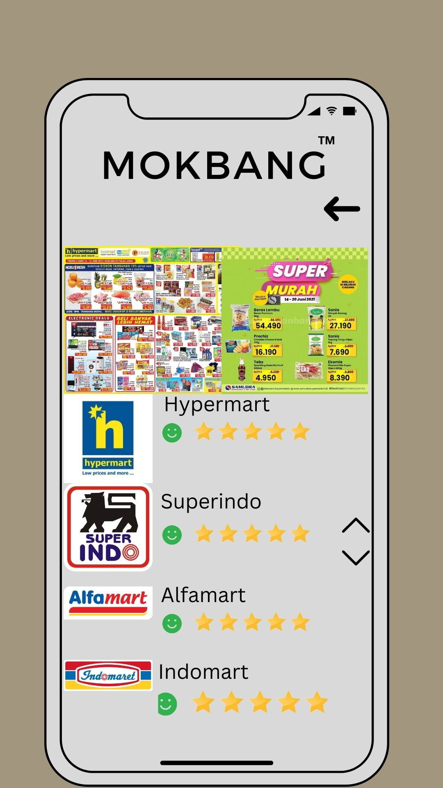
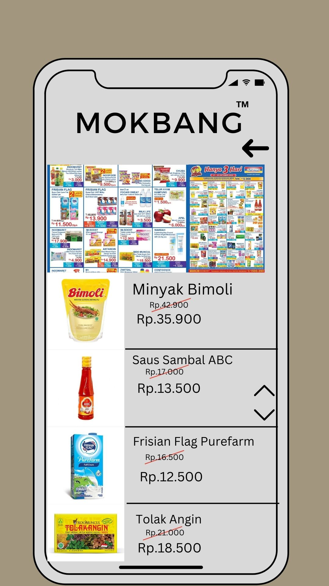
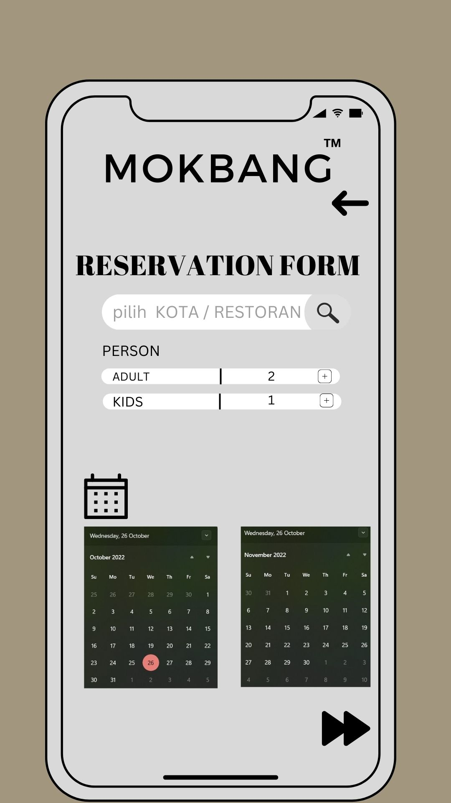
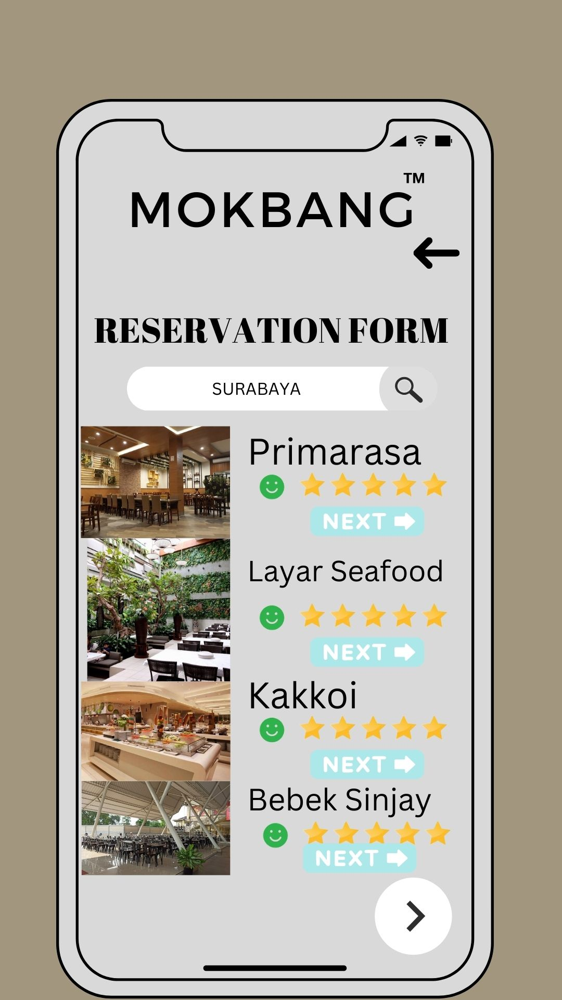
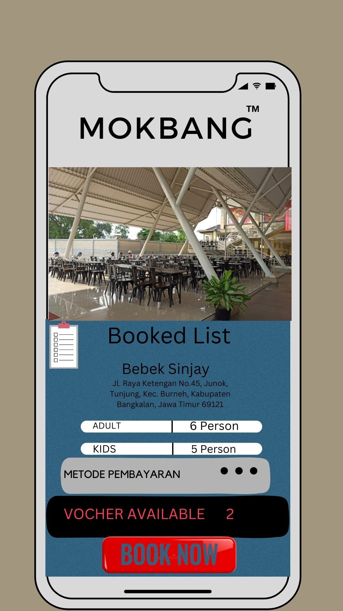
Research Paper
Alfarisqi, M. R., Prayogidianto, A. L., & Akbar, N. F. (2023). Rancang Jual Beli Online Makanan Berbasis Website Menggunakan Metodologi Scrum. Prosiding SITASI 2023, UPN "Veteran" Jawa Timur.
Download Paper (PDF)